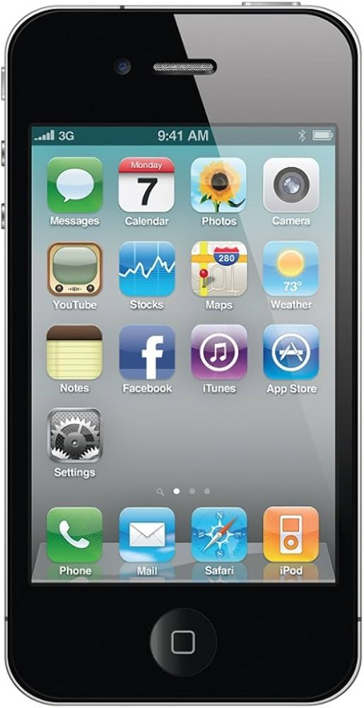
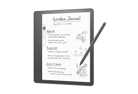

Technologies that have figured prominently in my attitudes about code and digital technology.
My name is Amanda Kalin and I am a 9th grade English teacher at Seneca Valley High School. One experience I had with coding was when I was in college. I took an instructional technology class. We had to learn about "Scratch" which is a website that helps kids learn about coding. We had to create a minute long video. I was so overwhelmed and thought it was pretty difficult. This made me hesitant to learn more about coding because I felt like I was so bad at it. I have not really learned much about it again until deciding to take this course. I figured it was valuable to learn about and something I should not be intimidated by. While I am still hesitant, I am having an open mind and trying to build more confidence in the area of computer science since technology is being used more and more every single day.
Technologies that have figured prominently in my attitudes about code and digital technology.
Overall, I felt like my data was pretty accurate. I spent a lot of my time on maps. This would make sense because my commute to work is 40 minutes. I coach basketball at Fox Chapel which is 50 minutes from my work. I spend a lot of time in the car and put on maps because I am always trying to dodge traffic. With that being said, a lot of my data showed time spent on podcasts or Spotify. I averaged 50 minutes a day on podcasts last week. I averaged about an hour on Spotify each day. For someone who spends a lot of the time in the car, this would make sense. Luckily my social media usage was not awful since I do not have a lot of free time. I personally think that this activity will be fantastic for students because it will help make them more self-aware. Often times, I hear students tell me that they did not have enough time to complete the homework. I bet if they were aware of how much time they spend on social media or Netflix, they would realize just how much time they actually waste.
It is important to address CT and code in the ELA classroom because just like letters are combined to shape meaning, so is code. Although words and code look very different, they are both a language of their own and can be used to either paint a picture in a reader's mind or help make an image appear on a screen. One area where we see code and ELA overlap is in the writing process. As discussed in the module, the writing process has many steps like brainstorming, drafting, revising, editing, and publishing. When we code, we design, implement, and test. Changing just one section of code, can change an entire image similar to how revising changes the meaning and can impact the overall story. In addition to this, everyone has to take ELA class. By incorporating technology in the instruction, it will only help students become more well-rounded. More exposure to technology and how it works will helps students in all aspects of their life considering how much technology plays a role in our everyday lives. This connects back to the data map that was created in the first module. Once we actually track our technology use, we realize how much we rely on it. Technology is not going anywhere, so it is imperative to expose students to as much of it as possible.
Add a caption
In my classroom, I plan to integrate computer science and computational thinking by using coding as a tool for creativity and critical thinking. One idea is to have students experiment with code to alter images, drawing a parallel to the revision process in writing. This would help students see how small changes can have big impacts. Additionally, I’d engage students in a brainstorming activity where they collect data on their screen time and use that information to craft a narrative, merging data analysis with storytelling. This approach will not only help students understand coding concepts but also inspire them to think more deeply about how technology and storytelling intersect. Overall, when it comes to planning, I would consider how I can incorporate computer science into my lesson to assist in students completing the main learning target. This PD has pushed my mind to think outside of the box and think in a way I have never thought before. I think that I mainly just need more confidence to incorporate some of this in my classroom. I would like to continue to learn more about computer science and coding. By practicing some of these concepts, I will gain more confidence. The next step is to have the courage to incorporate this into my classroom and learn from both my successes and failures.
Add a caption.